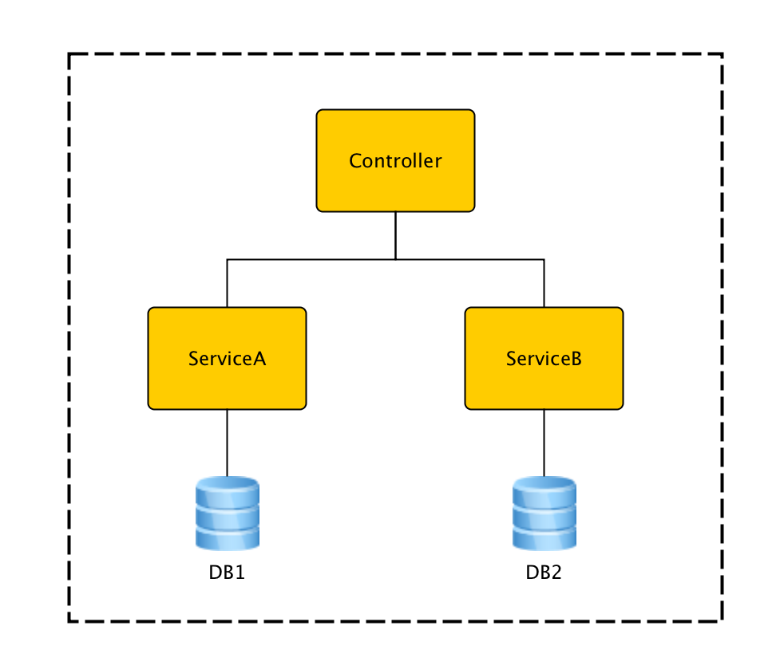

<!DOCTYPE HTML>
<html>
<head><meta name="generator" content="Hexo 3.9.0">
  <meta charset="utf-8">
  <meta http-equiv="X-UA-Compatible" content="IE=edge">
  <meta name="apple-mobile-web-app-capable" content="yes">
  <meta name="apple-mobile-web-app-status-bar-style" content="black">
  <meta name="google-site-verification" content>
  
  <title>【Spring】如何在单个Boot应用中配置多数据库？</title>
  <meta name="author" content="Emac">
   <meta name="description" content="为什么需要多数据库？默认情况下，Spring Boot使用的是单数据库配置（通过spring.datasource.*配置具体数据库连接信息）。对于绝大多数Spring Boot应用，这是符合其使用场景的，因为Spring Boot提倡的是微服务理念，每个应用对应一个单独的业务领域。但在某些特殊情况">
  

  <meta property="og:title" content="【Spring】如何在单个Boot应用中配置多数据库？">
  <meta name="viewport" content="width=device-width, initial-scale=1, maximum-scale=1">
  <meta property="og:site_name" content="Emac">
 <meta property="og:image" content="undefined">
  
  <link href="/apple-touch-icon-precomposed.png" sizes="180x180" rel="apple-touch-icon-precomposed">
  <link rel="alternate" href="/atom.xml" title="Emac" type="application/atom+xml">
  <link rel="stylesheet" href="//cdn.bootcss.com/bootstrap/3.3.6/css/bootstrap.min.css">
  <link rel="stylesheet" href="//cdn.bootcss.com/font-awesome/4.5.0/css/font-awesome.min.css">
  <link rel="stylesheet" href="/css/m.min.css">
  <link rel="icon" type="image/x-icon" href="/favicon.ico">
</head>
</html>
<body>
  <div id='wx_pic' style='display:none;'></div>
  <div id="main">
    <div class="behind">
      <div class="back">
        <a href="/" class="black-color"><i class="fa fa-times" aria-hidden="true"></i></a>
      </div>
      <div class="description">
        &nbsp;拾贝
      </div>
    </div>
    <div class="container">
      

  <article class="standard post">
    <div class="title">
      
  
    <h1 class="page-title center">
        【Spring】如何在单个Boot应用中配置多数据库？
    </h1>
  


    </div>
    <div class="meta center">
      
<time datetime="2016-02-20T16:00:00.000Z">
  <i class="fa fa-calendar"></i>&nbsp;
  2016-02-21
</time>


    
    &nbsp;
    <i class="fa fa-tag"></i>&nbsp;
    <a href="/categories/backend/">backend</a>


    
    &nbsp;
    <i class="fa fa-tag"></i>&nbsp;
    <a href="/tags/原创/">原创</a>·<a href="/tags/Spring/">Spring</a>


    </div>
    <hr>
    <div class="picture-container">
      
    </div>
    <h2 id="为什么需要多数据库？"><a href="#为什么需要多数据库？" class="headerlink" title="为什么需要多数据库？"></a>为什么需要多数据库？</h2><p>默认情况下，Spring Boot使用的是单数据库配置（通过spring.datasource.*配置具体数据库连接信息）。对于绝大多数Spring Boot应用，这是符合其使用场景的，因为Spring Boot提倡的是微服务理念，每个应用对应一个单独的业务领域。但在某些特殊情况下，一个应用对应多个数据库又是无法避免的，例如实施数据库分库后原本单个数据库变为多个数据库。本文就结合实际代码介绍如何在单个Boot应用中配置多数据库，以及与之相关的Druid，jOOQ，Flyway等数据服务框架的配置改造。</p>
<h2 id="配置示例"><a href="#配置示例" class="headerlink" title="配置示例"></a>配置示例</h2><p></p>
<ul>
<li>DB1，DB2: 两个示例数据库</li>
<li>ServiceA, ServiceB: 分别使用DB1和DB2的服务类</li>
</ul>
<h3 id="连接池Druid"><a href="#连接池Druid" class="headerlink" title="连接池Druid"></a>连接池Druid</h3><p><a href="https://github.com/alibaba/druid" target="_blank" rel="noopener">Druid</a>是阿里巴巴开源的数据库连接池，提供了强大的监控支持，号称Java语言中最好的连接池。</p>
<p>创建两个配置类分别注册对应DB1和DB2的DataSource Bean和TransactionManager Bean。以DB1为例：</p>
<blockquote>
<p>Tip: 可以把其中一个配置类中注册的DataSource Bean和DataSourceTransactionManager Bean加上@Primary注解，作为默认装配实例。</p>
</blockquote>
<pre><code>// DB1
@Configuration
public class Db1Config {

    @Bean(initMethod = &quot;init&quot;, destroyMethod = &quot;close&quot;)
    @ConfigurationProperties(prefix = &quot;db.db1&quot;)
    public DataSource dataSource1() {
        return new DruidDataSource();
    }

    @Bean
    public DataSourceTransactionManager transactionManager1() {
        DataSourceTransactionManager transactionManager = new DataSourceTransactionManager();
        transactionManager.setDataSource(dataSource1());
        return transactionManager;
    }
}
</code></pre><p>application.conf中的配置：</p>
<pre><code># DB1
db.db1.url=jdbc:mysql://127.0.0.1:3306/db1?useUnicode=true&amp;characterEncoding=UTF-8&amp;rewriteBatchedStatements=true
db.db1.username=root
db.db1.password=
</code></pre><h3 id="ORM框架jOOQ"><a href="#ORM框架jOOQ" class="headerlink" title="ORM框架jOOQ"></a>ORM框架jOOQ</h3><p><a href="http://www.jooq.org/" target="_blank" rel="noopener">jOOQ</a>是一个开源ORM框架，最大特点是提供类型安全的流式API，支持代码生成。</p>
<p>参照Boot自带的JooqAutoConfiguration，不难写出如下配置类：</p>
<pre><code>@Configuration
public class JooqConfig {

    // DB1
    @Bean
    public DataSourceConnectionProvider dataSourceConnectionProvider1(
            @Qualifier(&quot;dataSource1&quot;) DataSource dataSource1) {
        return new DataSourceConnectionProvider(
                new TransactionAwareDataSourceProxy(dataSource1));
    }

    @Bean
    public SpringTransactionProvider transactionProvider1(
            @Qualifier(&quot;transactionManager1&quot;) DataSourceTransactionManager txManager1) {
        return new SpringTransactionProvider(txManager1);
    }

    // DB2
    // ...

    @Configuration
    public static class DslContextConfig {

        @Autowired(required = false)
        private RecordMapperProvider recordMapperProvider;

        @Autowired(required = false)
        private Settings settings;

        @Autowired(required = false)
        private RecordListenerProvider[] recordListenerProviders;

        @Autowired
        private ExecuteListenerProvider[] executeListenerProviders;

        @Autowired(required = false)
        private VisitListenerProvider[] visitListenerProviders;

        // DSLContext for DB1
        @Bean
        public DefaultDSLContext dslContext1(@Qualifier(&quot;dataSourceConnectionProvider1&quot;) DataSourceConnectionProvider connectionProvider1,
                                            @Qualifier(&quot;transactionProvider1&quot;) SpringTransactionProvider transactionProvider1) {
            return new DefaultDSLContext(configuration(connectionProvider1, transactionProvider1));
        }

        // DSLContext for DB2
        // ...

        private DefaultConfiguration configuration(ConnectionProvider connectionProvider, TransactionProvider transactionProvider) {
            DefaultConfiguration configuration = new DefaultConfiguration();
            configuration.setSQLDialect(SQLDialect.MYSQL);
            configuration.set(connectionProvider);
            configuration.set(transactionProvider);
            if (this.recordMapperProvider != null) {
                configuration.set(this.recordMapperProvider);
            }
            if (this.settings != null) {
                configuration.set(this.settings);
            }
            configuration.set(this.recordListenerProviders);
            configuration.set(this.executeListenerProviders);
            configuration.set(this.visitListenerProviders);
            return configuration;
        }
    }
}
</code></pre><h3 id="服务类"><a href="#服务类" class="headerlink" title="服务类"></a>服务类</h3><p>配置好DataSource，TransacationManager和DSLContext之后，服务类的配置就比较简单了，直接引用即可。注意由于存在多套Beans，需要通过@Qualifier注解指定装配实例。</p>
<pre><code>@Transactional(&quot;TransactionManager1&quot;)
public class ServiceA {

    @Autowired
    @Qualifier(&quot;dslContext1&quot;)
    protected DSLContext dsl;
}
</code></pre><h3 id="数据库迁移框架Flyway"><a href="#数据库迁移框架Flyway" class="headerlink" title="数据库迁移框架Flyway"></a>数据库迁移框架Flyway</h3><p><a href="https://flywaydb.org/" target="_blank" rel="noopener">Flyway</a>是一个轻量级的开源数据库迁移框架，使用非常广泛。</p>
<p>参照Boot自带的FlywayAutoConfiguration，同样可以写出如下配置类：</p>
<pre><code>@Configuration
public class FlywayConfig {

    @Bean(initMethod = &quot;migrate&quot;)
    @ConfigurationProperties(prefix = &quot;fw.db1&quot;)
    public Flyway flyway(@Qualifier(&quot;dataSource1&quot;) DataSource dataSource1) {
        Flyway clinic = new Flyway();
        clinic.setDataSource(dataSource1);
        return clinic;
    }

    // DB2
    // ...

    /**
     * @see FlywayAutoConfiguration
     */
    @Bean
    @ConfigurationPropertiesBinding
    public StringOrNumberToMigrationVersionConverter stringOrNumberMigrationVersionConverter() {
        return new StringOrNumberToMigrationVersionConverter();
    }

    /**
     * Convert a String or Number to a {@link MigrationVersion}.
     * @see FlywayAutoConfiguration
     */
    private static class StringOrNumberToMigrationVersionConverter
            implements GenericConverter {

        private static final Set&lt;ConvertiblePair&gt; CONVERTIBLE_TYPES;

        static {
            Set&lt;ConvertiblePair&gt; types = new HashSet&lt;ConvertiblePair&gt;(2);
            types.add(new ConvertiblePair(String.class, MigrationVersion.class));
            types.add(new ConvertiblePair(Number.class, MigrationVersion.class));
            CONVERTIBLE_TYPES = Collections.unmodifiableSet(types);
        }

        @Override
        public Set&lt;ConvertiblePair&gt; getConvertibleTypes() {
            return CONVERTIBLE_TYPES;
        }

        @Override
        public Object convert(Object source, TypeDescriptor sourceType,
                              TypeDescriptor targetType) {
            String value = ObjectUtils.nullSafeToString(source);
            return MigrationVersion.fromVersion(value);
        }

    }
}
</code></pre><p>application.conf中的配置：</p>
<pre><code># DB1
fw.db1.enabled=true
</code></pre><h2 id="关于事务"><a href="#关于事务" class="headerlink" title="关于事务"></a>关于事务</h2><p>有经验的同学马上会问，多数据库下事务会不会有问题？需要改造成分布式事务吗？只要为每个数据库创建独立的TransactionManager，就不会有问题，Spring会自动处理好事务的提交和回滚，就像单数据库一样。至于分布式事务，大可不必，因为虽然有多个数据库，但仍然属于Local Transaction范畴。以后有时间我会再写篇文章展开阐述一下。</p>
<h2 id="总结"><a href="#总结" class="headerlink" title="总结"></a>总结</h2><p>由上可见，无论是基础的DataSource和TransactionManager，还是Spring之外的第三方框架，在Boot中基本都可以找到相应的AutoConfiguration配置类。参照这些配置类，就不难根据实际需要写出自己的扩展版本。对于那些找不到AutoConfiguration配置类的，可结合框架的官方文档，使用@Configuration和@Bean注解自行进行配置。</p>


  </article>
  </script>
  <script async src="//busuanzi.ibruce.info/busuanzi/2.3/busuanzi.pure.mini.js"></script>
  <span id="busuanzi_container_site_pv">本站总访问量<span id="busuanzi_value_site_pv"></span>次</span>


    </div>
  </div>
  <footer class="page-footer"><div class="clearfix">
</div>
<div class="right-foot container">
    <div class="firstrow">
        <a href="#top" >
        <i class="fa fa-arrow-right"></i>
        </a>
        © emacoo.cn 2015-2020
    </div>
    <div class="secondrow">
        <a href="https://github.com/gaoryrt/hexo-theme-pln">
        
        </a>
    </div>
</div>
<div class="clearfix">
</div>
</footer>
  <script src="//cdn.bootcss.com/jquery/2.2.1/jquery.min.js"></script>
<script src="/js/search.js"></script>
<script type="text/javascript">

// comments below to disable loading animation
function revealOnScroll() {
  var scrolled = $(window).scrollTop();
  $(".excerpt, .index-title, .index-meta, p").each(function() {
    var current = $(this),
      height = $(window).outerHeight(),
      offsetTop = current.offset().top;
    (scrolled + height + 50 > offsetTop) ? current.addClass("animation"):'';
  });
}
$(window).on("scroll", revealOnScroll);
$(document).ready(revealOnScroll)

// disqus scripts


// dropdown scripts
$(".dropdown").click(function(event) {
  var current = $(this);
  event.stopPropagation();
  $(current).children(".dropdown-content")[($(current).children(".dropdown-content").hasClass("open"))?'removeClass':'addClass']("open")
});
$(document).click(function(){
    $(".dropdown-content").removeClass("open");
})

// back to top scripts
$("a[href='#top']").click(function() {
  $("html, body").animate({ scrollTop: 0 }, 500);
  return false;
});


var path = "/search.xml";
searchFunc(path, 'local-search-input', 'local-search-result');

</script>

</body>
</html>
